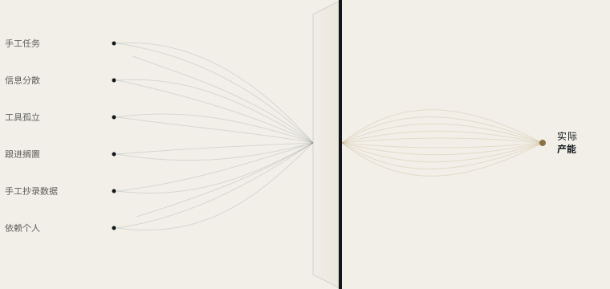

自动化
我们与您共同制定规则，把重复性任务变成自动运行的流程。
资源自动化
大多数企业并不需要更多工具。它们需要知道，时间、信息和精力究竟流失在哪里。
SKURX SYSTEMS 找出产能流失的环节，将其转化为更清晰、更互联、更高效的工作体系。
业务内容
我们找出您企业流失产能的环节，并在合适之处借助自动化、工具互联和应用型人工智能将其释放。

我们的服务
我们与您共同制定规则，把重复性任务变成自动运行的流程。
用于规则解决不了的问题：AI 增强您的团队，而不是取代团队。
我们打通您的各类工具，让信息在工具之间自动流转，无需人工介入。
工作方式
我们不从某项技术出发，而是从一个问题出发：您的企业在哪里流失产能？原因是什么？
我们深入了解您的企业，观察团队每天如何工作。
我们找出时间、信息或潜在客户在哪里流失，以及原因。
我们会告诉您哪些值得改变，哪些不必改动。
我们负责上线，与您一起测试，并持续调整，直到它符合团队的实际需要。
第一步
我们用一周时间分析您企业的运作方式，并交付一份清晰的全景图：哪些环节消耗产能，哪些可以自动化，按什么顺序推进。无论您最终如何决定，报告都归您所有。
每个流程都用通俗的语言说明。
账户、工具和数据都属于您。
您可以查看每项自动化做了什么、何时做的。
即使我们停止合作，一切仍归您所有。
行业示例
以下为基于常见情况的示例场景。我们服务西班牙各地、各个行业的企业。
即使办公室里已空无一人，一切仍在照常运转。